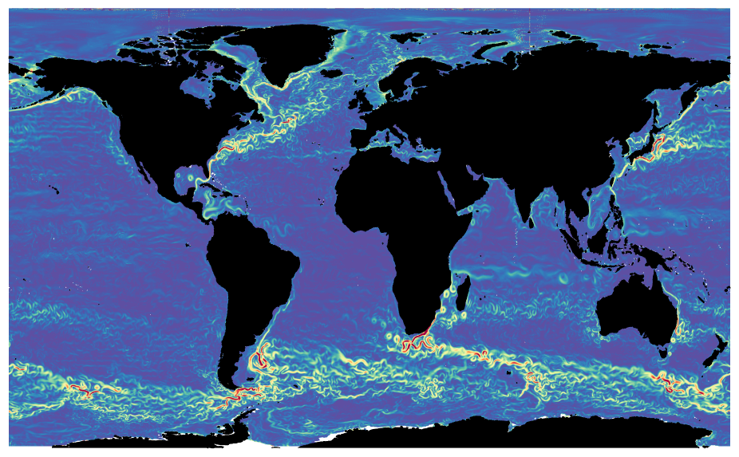
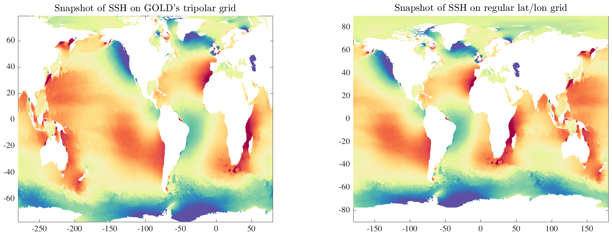

SPHEREINTERP Fast linear interpolation on the sphere from non-plaid grids. _______________________________________________________________________  _______________________________________________________________________ SPHEREINTERP takes a 2D array ZO, defined for latitudes and longitudes LATO and LONO, and linearly interpolates the values of ZO onto a plaid grid defined by 1-D arrays LAT and LON, leading to the output array Z. LATO, LONO, and ZO are all the same size. It is not necessary for LATO and LONO to be plaid, i.e. created by MESHGRID. LATO should increase monotonically along array *rows*, while LONO should increase monotonically along array *columns*. Both should vary smoothly as a function of the underlying array coordinates. SPHEREINTERP is called twice with different arguments, first with four arguments and then with five, as follows: [DX,DY,INDEX,BOOL]=SPHEREINTERP(LATO,LONO,LAT,LON); Z=SPHEREINTERP(DX,DY,INDEX,BOOL,ZO); The first phase computes indices into the original LATO, LONO arrays for the target LAT, LON values. The second phase uses these indices to find linearly interpolated values through an array lookup. The first phase is computationally expensive, but the second is very fast. For intepolating many different fields on the same grid, one only needs to make the first call to SPHEREINTERP one time, thus giving a computationally efficient way to perform the interpolation. If LATO and LONO are a plaid grid, INTERP2 will be much faster and should be used instead. It is not necessary to understand the details of these two calls to SPHEREINTERP, however for completeness they are described below. _________________________________________________________________ Periodicity in longitude SPHEREINTERP(LATO,LONO,LAT,LON,'periodic') adapts the first phase calculation to account for periodicity in longitude. This option should be used if LATO and LONO represent the entire sphere. In this case, LATO and LONO should be periodic in the column direction, that is, the column just to the right of the last column is understood to be represented by the first column. ___________________________________________________________________ Parallelization SPHEREINTERP(LATO,LONO,LAT,LON,'parallel') parallelizes the first phase of the calculation using a PARFOR loop. This requires that Matlab's Parallel Computing Toolbox be installed. ___________________________________________________________________ Condition number [DX,DY,INDEX,BOOL,C]=SPHEREINTERP(LATO,LONO,LAT,LON) with five output arguments for the first phase call also outputs C, the condition number of the Jacobian matrix of the LATO,LONO grid at each LAT/LON location. If there are locations where this matrix is ill-conditioned, one may form a threshold on C to revert to the nearest-neighbor interpolation, which can be output as described below under 'Second phase details.' __________________________________________________________________ First phase details: index computation [DX,DY,INDEX,BOOL]=SPHEREINTERP(LATO,LONO,LAT,LON) finds the point in the original LATO, LONO fields nearest each target LAT, LON point, as well as the three points adjacent to this closest point. DX and DY are arrays of the same size as LAT and LON giving the column and row deviations, respectively, within LATO and LONO from the closest point in those arrays to the linearly interpolated LAT/LON value. The closest original point to each target point is found using SPHEREDIST. The DX and DY arrays are found from the observed lat/lon deviations by inverting (using MATINV) the Jacobian matrix describing the variation of LATO and LONO with respect to the array coordinates. INDEX is a cell array with four elements, each of which is the same size as LAT and LON. It gives the locations within LATO and LONO of the closest point to each target point, and of three adjacent points. Specifically, INDEX{1} gives the index into LATO and LONO of the original point nearest each target point. INDEX{2} is the index into the closer of the two original points in an adjacent *column* to the closest point, INDEX{3} is likewise in an adjacent *row* to the closest point, and INDEX{4} is in both an adjacent row and an adjacent column. BOOL is a boolean array that is true whenever all four of the indices in INDEX are well-defined. _______________________________________________________________________ Second phase details: linear interpolation Z=SPHEREINTERP(DX,DY,INDEX,BOOL,ZO) then computes Z as a weighted sum of the ZO values from the four points identified in the first stage: Z1 = (1-ABS(DX)).* (1-ABS(DY)) .* ZO(INDEX{1}); Z2 = ABS(DX) .* (1-ABS(DY)) .* ZO(INDEX{2}); Z3 = (1-ABS(DX)).* ABS(DY) .* ZO(INDEX{3}); Z4 = ABS(DX) .* ABS(DY) .* ZO(INDEX{4}); Z = Z1 + Z2 + Z3 + Z4; For the case in which LATO and LONO are a plaid grid, this matches the results from Matlab's INTERP2 to numerical precision. At any points where the linear interpolation fails or yields NaNs---as can happen where the inversion of the Jacobian is not numerically stable, or where interpolated locations point to undefined values of the original field (e.g. near coastlines)---the nearest-neighbor fit is substituted in place of the linear interpolation. [Z,Z1]=SPHEREINTERP(DX,DY,INDEX,BOOL,ZO) also outputs Z1, the nearest- neighbor interpolation, for comparison. Then LENGTH(FIND(Z==Z1)) gives the number of points for which the nearest-neighbor fit has been used. _______________________________________________________________________  _______________________________________________________________________ Example The above two figures provide an example of using SPHEREINTERP. The relevant code is contained in MAKEFIGS_SPHEREINTERP. The left-hand figure shows sea surface height from an ocean model which uses a "tripolar" grid. Note that at high Northern latitudes, features are not only strectched, they are also distorted. Using SPHEREINTERP the model fields are mapped onto a regular lat/lon grid, seen at right. The figure at the top of the page is the sea surface height gradient magnitude of the interpolated field, showing a very high level of detail. Some minor artifacts at two locations in the Arctic reveal the locations where the model grid is singular. Computing the initial mapping coefficients on the models rougly 1/8 degree grid is computationally very expensive, and takes about 1.5 hours on a 12 core Mac Pro working in parallel mode. After that, however, the mapping for each time step takes only about one second using the second call to SPHEREINTERP. The model data is from a simulation using the GFDL's Generalized Ocean Layered Model, or GOLD, kindly provided by Harper Simmons at the University of Alaska Fairbanks. _________________________________________________________________ See also SPHERESORT, JSPHERE. 'sphereinterp --t' runs a test. 'sphereinterp --f' generates the two figures shown above. Usage: [dx,dy,index,bool]=sphereinterp(lato,lono,lat,lon,'parallel'); z=sphereinterp(dx,dy,index,bool,zo); __________________________________________________________________ This is part of JLAB --- type 'help jlab' for more information (C) 2017--2022 J.M. Lilly --- type 'help jlab_license' for details